Linux and CLI Commands
Build confidence at the
Bash
command line through guided exercises and nine hands-on challenges covering files, permissions, packages, scripting, logs, and pipelines.
🎯 Learning outcomes
Work through the sections in order. Complete each instruction and confirm the expected result before moving on.
-
Navigate the
Linuxfilesystem and create, move, copy, inspect, and remove files. -
Edit text with
Nanoand search content withgrepandfind. -
Write and execute
Bashscripts that automate repeatable work. - Read and change Linux permissions and ownership safely.
- Install packages, inspect directory trees, analyse logs, and combine commands with pipelines.
🧭 Introduction to the Bash command line
We usually interact with remote servers through a
command-line interface
(CLI) rather than a graphical user interface (
GUI
). A
CLI
is a text-based interface where commands follow a defined syntax. This makes remote administration efficient and makes repeatable work easy to capture in scripts.
Here are a few reasons why it is important to learn the CLI:
-
It is a very popular technology and a very common tool in DevOps and Computer Science.
-
It is one of the best ways to control and interact with cloud services.
-
You type faster than you click.
-
It allows you to automate repetitive tasks.
To start, please:
-
Open VirtualBox and start a
Linuxenvironment (Ubuntu/Fedora) we set up in the previous lab. -
You can either
SSHto your VM. But if your SSH has some issues then you can just type commands straight in the terminal of your VM for this lab. -
Ready to play around with CLI commands in the challenges below.
⌨️ Challenge 0: CLI foundations
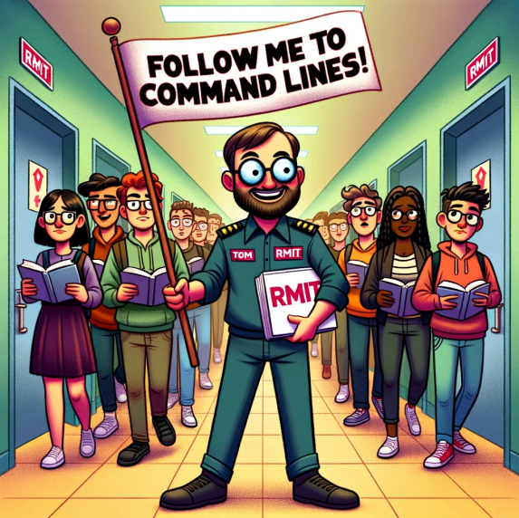
-
Check your current
date:-
Note: the time and date is shown is the default EDT ("Eastern Daylight Time.") It is the daylight saving time observed in the Eastern Time Zone of the United States and parts of Canada so it might not exactly reflect the time format in Vietnam without the conversation.
-
date-
Print out the current login user:
whoami-
Print out the group which current login user belongs to:
groups $(whoami)-
Print "Hello World" to the screen:
echo Hello World-
Check current working directory (where you are):
pwd
Question
: Can you guess what “
pwd
” stands for?
-
List all files and directories in current working directory (where you are):
ls
Question
: Do you see any files or directories? Also, can you guess what “
ls
” stands for?
-
Create a new directory so we can work on it:
mkdir my_new_folder
Question
: How to check if that
my_new_folder
is created after your previous command ?
-
List all files and folders in current working directory (where you are) again:
lsQuestion : Do you see any files or folders now?
-
Change current working directory to that
my_new_folderdirectory:
cd my_new_folder
Question
: How to confirm if you are already inside
my_new_folder
?
-
Let's create 2 folders: folder1, folder2:
mkdir folder1mkdir folder2Or in one line:
mkdir folder1 folder2-
Let's create two empty files: file1, file2:
touch file1.txttouch file2.txtQuestion : Is there any quicker way to create these two files in one go?
-
List all files and directories (including hidden ones -a and in long format -l):
Can you try each of these commands and see the differences?
lsls -lls -als -laQuestion : What is the . and .. (only show with -a) ?
-
Let's add some text to the files:
echo Hello What are you doing > file1.txtecho Bonjour How are you doing > file1.txtecho I am fine thank you >> file2.txtecho I am coding bash commands now >> file2.txt-
Let's check the content of file1 and file2:
cat file1.txtcat file2.txt
Question
: After checking the content of
file1.txt
and
file2.txt
, what is the difference between > and >> ?
-
Let's move those files to the different directories:
mv file1.txt folder1mv file2.txt folder2Question : How can you check if your files are moved after you have run the commands?
-
Let's check what inside folder1
cd folder1ls-
Let's make a copy of
file1.txtto folder2
cp file1.txt ../folder2Question : Why do we use .. here?
-
Let's change current directory to folder2:
cd ..cd folder2Question : How can you confirm if you are already in the folder2? Also, how can you check what files are in folder2?
Question : Can you quickly do two steps of changing directories from folder 1 to folder 2 in one go?
-
Let's remove the copied file1 in folder2:
rm file1.txt
Question
: How can you confirm before deleting, that
file1.txt
is in folder1 or in folder2?
-
Let's try to remove the whole folder2:
cd ..lsrm folder2Question : Why does this last command give you an error?
-
Now, let's try to force it to delete the directory folder2:
rm -rf folder2
Question
: Can you guess what are the
r
and
f
arguments of the
rm
command?
Here is the meme for the most destructive command in the history of computers:
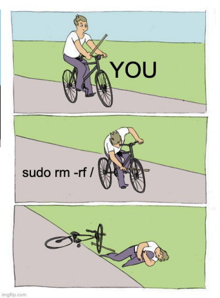
Please do not try the command in this meme :)) (or you might need a new VM for that)
-
Let's rename
file1.txttofile3.txt:
cd folder1mv file1.txt file3.txt
Question
: Is there any quicker way to rename
file1.txt
to
file3.txt
without
cd
folder1 first?
-
Let's create more files (
file4.txtandfile5.txt) in folder1:
touch file4.txt file5.txt-
Let's add more content in
file4.txtandfile5.txt:
echo Hello world >> file4.txtecho Hello good friends to DevOps >> file4.txtecho Learning new DevOps materials >> file5.txtecho Good bye new friends >> file5.txt-
Let's see what is in
file4.txt:
cat file4.txt-
Let's search the word "Hello" in
file4.txt:
grep Hello file4.txt-
Let's search the word "DevOps" in the whole folder1:
grep DevOps -r .
Question
: Can you guess what is
-r
and what is . ? Also, for this task, is there any scenario, we use "folder1" instead of . ?
-
Let's save the results of the search in a new file "
result.txt":
grep DevOps -r . >> ../search_result.txt
Question
: So where is the location of
search_result.txt
? How can we check the content of
search_result.txt
? Can you guess what exact location of .. and . in this context?
-
grepis for searching word content. However, tofindfile names then you need to use “find” command:
find ~ -name "*.txt"
Question:
what is different between that command and “ls *
.txt
”
-
Let's create more empty files with different extensions in the folder1:
touch image.jpg music.mp3 dataset.zipQuestion : How can you list those newly created files in the folder1?
-
We have a bunch of files in folder1 but we want to move all
file3.txt,file4.txtandfile5.txtoutside of folder1:
mv *.txt ..or
mv file* ..Question : What is the * here? Can you explain the difference between the * in the first command and the * in the second command?
-
Let's change the directory outside of folder1 (back to
my_new_folder):
cd ..-
Let's count how many words in
file4.txt:
wc -w file4.txt
Question
: Can you guess what are the parameters
w
of the
wc
command?
-
Let's count how many lines in
file4.txt:
wc -l file4.txtQuestion : Can you guess what are the parameters l of the wc command?
Question : What is the -w and -l ?
-
Let's see how many times the word "world" appear all files in
my_new_folder
grep world -r .-
Let's count how many times the word "friends" appear all files in
my_new_folder
grep friends -r . | wc -lQuestion : What is the purpose of |? Could you break this command into two parts and explain it?
-
To check all the past commands I have used so far, you can use “history” command:
history-
Let’s edit a file using the
nanocommand. But first, let’s install nano command:
sudo yum install nanoEnter “y” to confirm that installation!
Note : you don’t need to install nano command on Ubuntu, but only on CentOS as Ubuntu got the nano command already installed!
Question: what does “sudo” do? When do we need to use it to run commands?
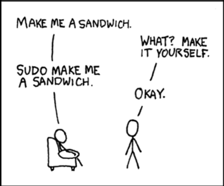
-
To edit “
file5.txt”, we need to run:
nano file5.txt-
You should see this screen:
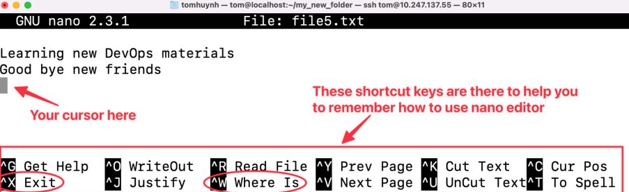
You use arrow keys to move the cursor around to edit the file, and just type like normal to add characters, use backspace to remove characters, and when you are ready to save and quit nano, press “Ctrl+X”.
-
Add two new lines in the “
file5.txt”:
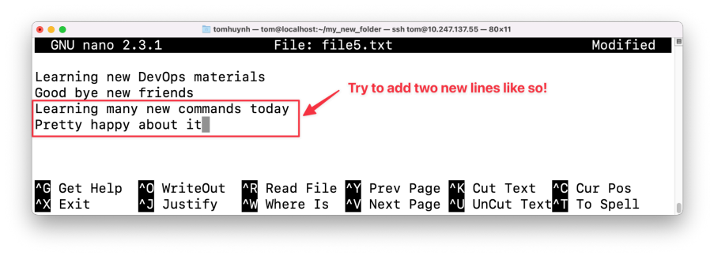
-
Press “Ctrl+X” to save the file and quit Nano:
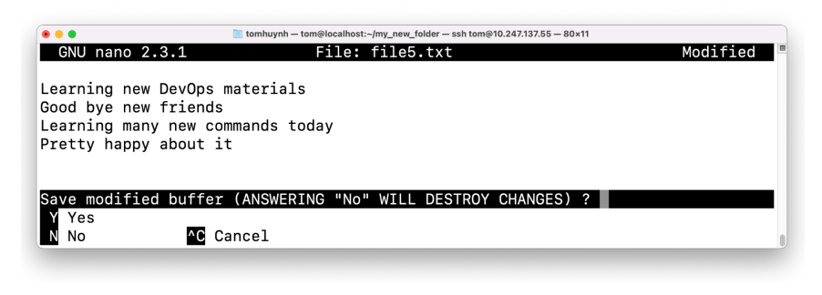
Press “Y” to confirm to save the file with new changes or “N” to not save the changes.
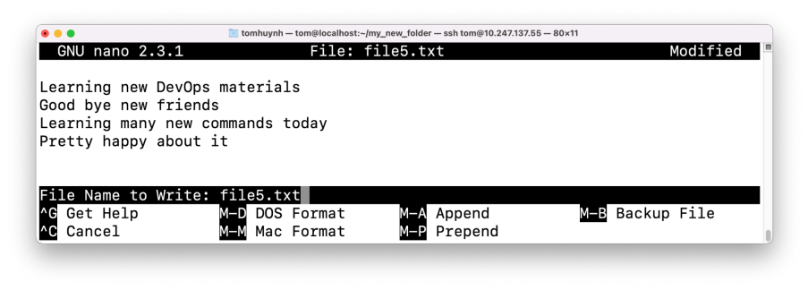
Then nano will ask you if you want to rename the file: you can either change the file name to save as a new file or just press Enter to overwrite the current file! That’s it! That’s how you learn how to use the
nano editor!-
You can confirm the changes by using the
catcommand forfile5.txt:
cat file5.txtHopefully, you will see:
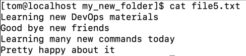
-
Sometimes you do not want to display all content of the file, you just want to show the beginning or the end of the file:
head -2 file5.txttail -2 file5.txt
Question:
can you figure out what
head
and
tail
do? and what are the number parameters of each command?
Alright, that is fun so far! To automate stuff, we need to run these commands at once! Then we need to learn how to create a
bash
script which contains many commands and when we execute that bash script file, all the commands inside that file will be executed!
-
First, keep the exercise organised by creating a new working directory:
mkdir learn_bash_scriptcd learn_bash_scriptpwd-
Create an empty Bash script. The
.shextension is conventional but does not make the file executable by itself:
touch my_bash_script.sh-
Open the file in Nano:
nano my_bash_script.sh-
We would like to create these directory structures like in the picture:
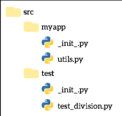
-
Enter the following commands in Nano, then save the file:
#!/bin/bash
mkdir -p src/main/java src/main/resources
touch src/main/java/Main.java
touch src/main/resources/application.properties
Why use mkdir -p? It creates missing parent directories and does not fail if the directory already exists, making the script safe to run again.
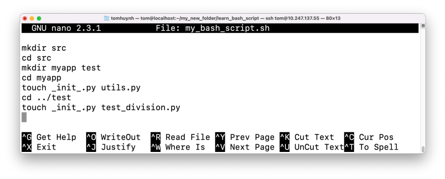
Question: Can you explain why these commands must run in this order?
-
Now, you can execute this bash script file:
bash my_bash_script.sh
Explore the newly created src directory and confirm that its contents match the target structure.
Question:
Can you run the bash script by simply running it “./
my_bash_script.sh
” without the command bash? If not, then what is the issue and how do we solve it?
Other interesting commands:
-
Check the current
LinuxDistro information by looking at os-release file:
cat /etc/os-release-
To get a neat summary of the current logged-in user, we can install the “finger” package for that:
-
Replace “
yum” with “apt” if you use Ubuntu VM instead of Fedora.
-
sudo yum install finger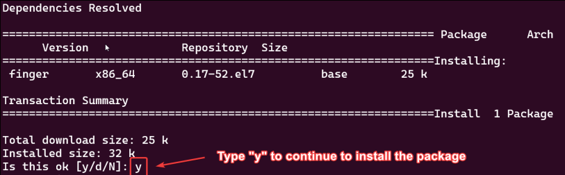
-
Once you have finger installed, you can use it to display some information about any user:
finger $(whoami)-
Here is my example screenshot:
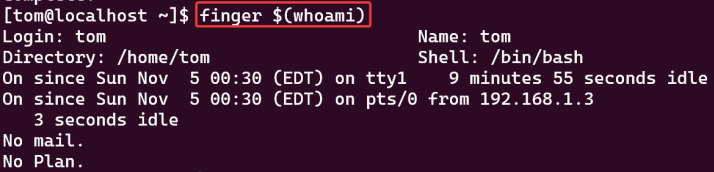
That's it, you have finished the basics of the command line, please go through those challenges below!
📁 Challenge 1: Create directories and copy files
-
Create a directory named
bash_learning, and change your current working directory to that directory. -
Create three folders named dir1 , dir2 , dir3 with one command.
-
Create three empty files in each folder named
file1.txtin dir1 ,file2.txtin dir2 ,file3.txtin dir3 with one command. -
Append 'Hello' to
file1.txt, 'Bonjour' tofile2.txt, 'Hallo' tofile3.txtusingecho. -
Copy
file1.txtto dir2 ,file2.txtto dir3 ,file3.txtto dir1. -
From
bash_learning/findall files that contain 'Hallo' and save the result inhallo.txt
📜 Challenge 2: Working with text files
That Project Gutenberg text file includes many of Shakespeare’s best-known works, such as the tragedies Hamlet, Macbeth, Othello, King Lear, and Romeo and Juliet; the comedies A Midsummer Night’s Dream, Twelfth Night, and Much Ado About Nothing; the histories Henry V and Richard III; plus the Sonnets and other poems.
-
Download the file containing the works of Shakespeare with this command:
curl https://www.gutenberg.org/files/100/100-0.txt > shakespeare.txt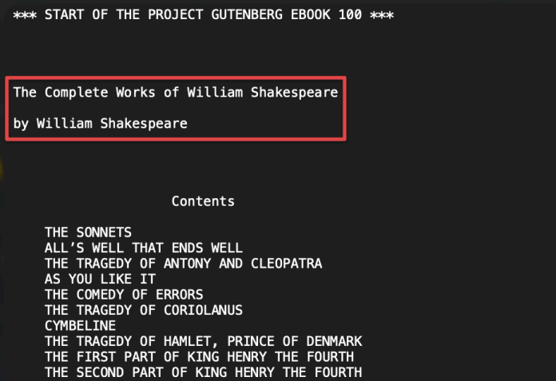
-
Use
Linuxcommands you have learnt so far (likegrep) to find out:-
Count how many words are there in the file.
-
Count how many lines of this file.
-
Count how many times the word Romeo occurs, and compare with the word Juliet.
-
These are the top five most popular characters in Shakespeare’s book. Can you figure out
-
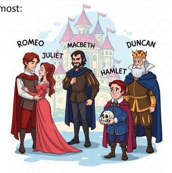
which character names are mentioned the most:
-
Romeo
-
Juliet
-
Macbeth
-
Hamlet
-
Duncan
-
-
-
Also, can you find the total amount of mentions of these five characters?
🗂️ Challenge 3: Setup project folder
Write a
bash
script to generate this project structure:
├── data/
│ ├── raw/
│ │ ├── cat/
│ │ └── dog/
│ ├── train/
│ ├── test/
│ └── validation/
├── app/
│ ├── blueprints/
│ │ └── home_page/
│ │ └── blueprint.py
│ ├── static/
│ │ ├── styles.css
│ │ └── index.js
│ ├── templates/
│ │ ├── base.html
│ │ └── home.html
│ ├── app.py
│ └── .gitignore
├── scripts/
│ ├── preprocess.py
│ ├── model.py
│ └── train.py
└── notebooks/
Create a bash script file named "
my_script.sh
" and when you execute that script:
bash my_script.shThis will generate all of these folders and files.
[Extra Information]
Run the following command to check the
file permissions
of
my_script.sh
:
ls -l my_script.shYou should see output similar to this, with your own username instead of tom:
The permissions -rw-rw-r-- mean that the file is readable and writable by the owner and group, and readable by others. However, it is not executable by anyone.
[Question] So why can we still run the script using this command?
Answer : You can run a script without execute permission by explicitly calling an interpreter, such as bash.
When you run bash
my_script.sh
, you are telling the Bash program to read and execute the commands inside
my_script.sh
. In this case, the script itself does not need execute permission because it is being passed as an argument to bash.
This works because:
-
the bash program has execute permission
-
you have read permission for
my_script.sh
This method is useful for quick tests or when you do not want to make a script executable. However, if you plan to run the script often, you can add execute permission for the owner:
chmod u+x my_script.shAfter that, you can run the script directly:
./my_script.sh🖼️ Challenge 4: Sort image dataset
-
Download a small dataset of cat and dog images from GitHub:
curl -L -O https://raw.githubusercontent.com/TomHuynhSG/public_datasets/master/small_cat_dog_dataset.zip-
Check the file which you just downloaded
ls-
Realise the file name is pretty ugly "
small_cat_dog_dataset.zip_raw=true" -
Rename that file name to "
small_cat_dog.zip"
mv small_cat_dog_dataset.zip\?raw\=true small_cat_dog.zip-
To
unzipthat file, we need to install unzip command:-
Remove “
apt” with “yum” if you use Fedora VM instead of Ubuntu VM
-
sudo apt install unzip-
Unzip that file using the command
unzip small_cat_dog_dataset.zip-
Now, you should see there is a new folder "DATA" contains 10 images of dogs and 10 images of cats
-
Create a new folder “
SORTED_DATA”. -
Create two new folders "cat" and "dog" inside the “
SORTED_DATA”. -
Figure out how to quickly move all cat images to cat folder and move all dogs images to dog folder
Note : This is a very common first step you need to do during your machine learning project. You download a dataset which is messy, and you need to sort them and put them in the right folders to be ready for preprocessing.
⚙️ Challenge 5: Automate the whole process
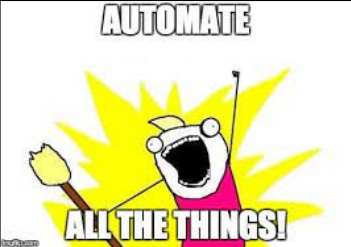
This challenge is straightforward! Write a
bash
script to combine all the steps of Challenge 3 and Challenge 4 so when you run your bash script:
bash my_ultimate_script.sh
All of those folders and files are generated. Also the dataset file is downloaded, unzipped and sorted inside the folder
data/raw/cat
and
data/raw/dog
.
All of those steps in one go!
Automation checkpoint: Which commands in this script should be safe to run twice? What could go wrong if the download, unzip, or move steps are not idempotent?
├── data/
│ └── raw/
│ ├── cat/ ← Put all the cat images in this folder
│ └── dog/ ← Put all the dog images in this folder
├── app/
├── scripts/
└── notebooks/🔐 Challenge 6: File permissions and ownership
-
Navigate to Home Directory :
-
Start by going to your home directory. This is usually the default directory when you open a terminal, but you can always navigate to it using:
-
cd ~-
Create a File:
-
Use the
touchcommand to create a blank file namedfilename.txt:
-
touch filename.txt-
Verify Creation:
-
To make sure the file was created successfully, list the contents of your directory:
-
ls -l-
You should see
filename.txtin the list, along with its default permissions.
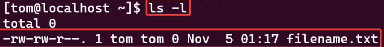
-
Add some content:
-
For demonstration purposes, let's add some content to
filename.txt. You can use theechocommand in conjunction with the >redirectionoperator:
-
echo "This is a sample text for filename.txt" > filename.txt-
Verify Content:
-
Use the
catcommand to display the contents of the file:
-
cat filename.txt-
You should see the text "This is a sample text for
filename.txt" printed to the terminal.-
Now that
filename.txtis set up and has some content, you can proceed with the steps related tofile permissionsand ownership.
-
-
Modifying Permissions with
chmod-
The chmod command allows you to change permissions on a file or directory.
-
Using Symbolic Mode:
-
u stands for user, g for group, o for others, and a for all.
-
+ is used to add permissions, - to remove, and = to set exact permissions.
-
Give execute permission to the owner:
-
-
Using Symbolic Mode:
-
chmod u+x filename.txt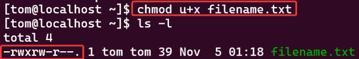
-
Remove write permission for the group:
chmod g-w filename.txt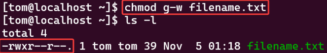
-
Give read and execute permissions to everyone:
chmod a+wx filename.txt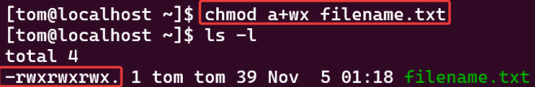
-
Using Octal Mode:
-
Permissions can be represented as octal numbers: r is 4, w is 2, and x is 1. The sum of these numbers gives the permission set.
-
To give read, write, execute permissions to the owner, and only read and execute to group and others:
-
-
chmod 755 filename.txt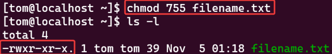
-
This is calculated as:
-
Owner: rwx = 4 + 2 + 1 = 7
-
Group: r-x = 4 + 0 + 1 = 5
-
Others: r-x = 4 + 0 + 1 = 5
-
[Question] For server security, what is usually the default permission of the production project on the server? Is 755 good enough or is it very bad?
-
-
-
-
Changing File Ownership with
chownand chgrp-
Using chown to Change Owner:
-
To change the owner of a file or directory:
-
“sudo chown newuser thefile”
-
For this example, we can set the new owner to be the root user
-
-
-
sudo chown root filename.txt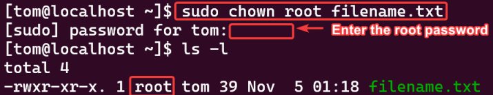
-
Using chgrp to Change Group:
-
To change the group of a file or directory:
-
“sudo chgrp newgroup thefile”
-
Let’s change the group to root as well (so the file will belong to both user root and group root)
-
-
-
sudo chgrp root filename.txt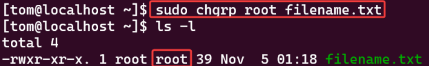
-
To change both the owner and the group at the same time:
-
“sudo chown newowner:newgroup thefile”
-
In this example, we set the owner is tom and the group is wheel:
-
-
sudo chown tom:wheel filename.txt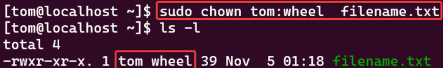
🔐 Mini challenge: Secure the deployment server
- Step 1: Prepare the environment by creating the following structure:
deployment_lab/
├── scripts/
│ └── deploy.sh
├── config/
│ └── app.conf
├── logs/
│ └── app.log
└── secrets/
└── credentials.txt-
Add some sample content to each file.
-
Step 2: Complete the permission challenges
-
Use
chmod,chown, or chgrp where appropriate. -
Requirement 1: Deployment script
-
The owner must be able to read , write , and execute
deploy.sh. -
The group may read and execute it.
-
Other users must have no access .
-
-
Requirement 2: Application configuration
-
The owner may read and write
app.conf. -
The group may only read it.
-
Other users must have no access.
-
-
Requirement 3: Log file
-
The owner may read and write
app.log. -
The group may read it.
-
Other users may also read it.
-
Nobody should be able to execute it.
-
-
Requirement 4: Credentials file
-
Only the owner may read or write
credentials.txt. -
The group and other users must have no permissions .
-
-
Requirement 5: Secrets directory
-
Only the owner should be able to enter , list , or modify the secrets directory.
-
-
Requirement 6: Ownership challenge
-
Change the group of the
deployment_labdirectory and everything inside it to a group available on your VM. -
Do not assume that the group wheel exists; check your available groups first.
-
-
Requirement 7: Verification
-
Use
ls-l and ls -ld to confirm every permission. -
Record the symbolic permission and octal permission for each item.
-
-
Reflection questions:
-
Why should
credentials.txtNOT use permission 755 ? -
Why does a directory need execute permission?
-
What is the difference between chmod 640 file and chmod 750 file?
-
Why is it normally unnecessary for
.txt,.conf, and.logfiles to be executable? -
Which permissions would you consider too open for a production secret?
-
-
📦 Challenge 7: Linux packages and terminal tools
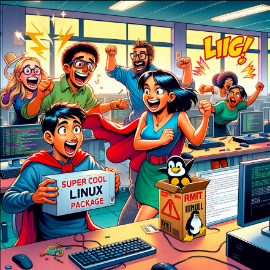
Objective
: Familiarize yourself with the installation and usage of popular
Linux
packages on Ubuntu or Centos.
🚂 Package 1: sl
The
sl
command is to playfully simulate a train moving across your terminal when you accidentally type “sl” instead of “
ls
” (a common mistype).
-
Install sl. (Replace
aptwithyumif you run it on Fedora VM instead of Ubuntu VM)
sudo apt install sl-
Run sl.
sl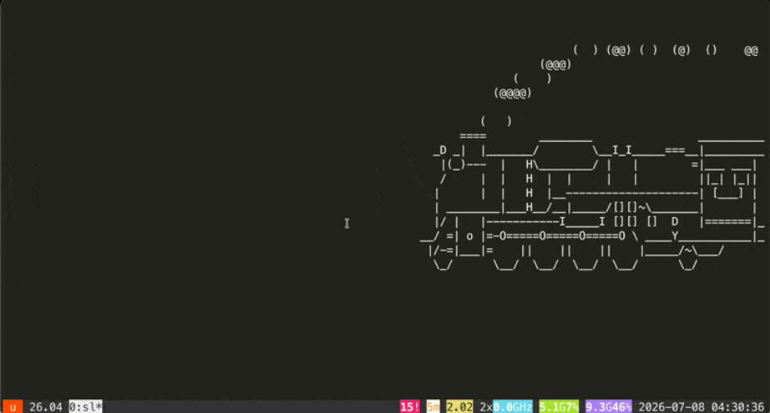
🐄 Package 2: cowsay
The cowsay command is used to generate an ASCII art representation of a cow or other animals with speech or thought bubbles containing a customizable message.
-
Install cowsay
sudo apt install cowsay -y-
Once cowsay is installed, you run the command to see a cow in your terminal:
-
You can customise the message of the cow.
-
cowsay I Love DevOps at RMIT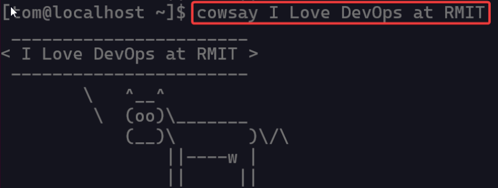
🎬 Package 3: hollywood
Have you ever watched a movie where the “tech expert” has many terminal windows flashing logs, system monitors, and random code? The hollywood package lets you turn your terminal into a harmless movie-style command center.
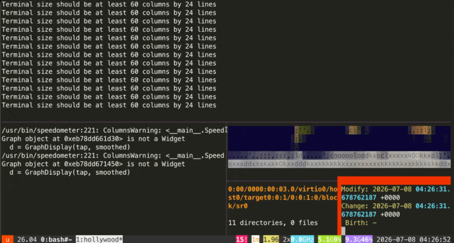
It does not hack anything or change your system in a serious way. It is just a fun visual demo that makes your terminal look busy and dramatic, like you are operating a secret DevOps control room.
-
Install hollywood.
-
Replace
aptwithyumif yourLinuxdistro is Fedora instead of Ubuntu
-
sudo apt install hollywood -y-
Run hollywood.
hollywood-
Enjoy the cinematic terminal show! You should see multiple panels showing fake system activity, logs, code, and monitoring screens. Pretend you are in a movie scene where the production server needs saving in 60 seconds.
-
To stop it, press:
Ctrl + C🌳 Package 4: tree
The
tree
command is a very useful tool for visualizing the file and folder structure of your current directory.
Instead of using many
cd
and
ls
commands to explore folders one by one, tree gives you a clear “map” of your project. This is especially helpful when you are working with project folders, datasets, scripts, or web applications.
-
Install tree.
-
Replace
aptwithyumif yourLinuxdistro is Fedora instead of Ubuntu
-
sudo apt install tree -y-
Run tree in your current directory.
tree-
You should see the folder and file structure displayed like a tree.
-
Example output:
-
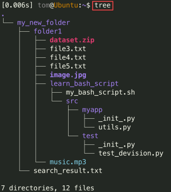
-
Show only folders, not files:
tree -d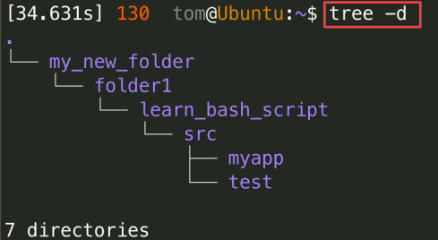
-
Limit how many levels deep you want to display:
tree -L 2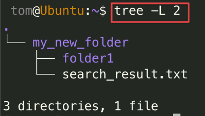
[Question]
Why is tree useful when checking whether your
bash
script created the correct project folder structure?
[Bonus Question ] After completing Challenge 3 or Challenge 5, can you use the “tree” command to confirm that your generated folders and files match the required structure?
🧰 Mini challenge: Build your system administrator toolkit
- Role-play scenario: You have joined an infrastructure team and received a list of approved command-line packages. Your team lead has not explained them because they want you to practise discovering unfamiliar tools independently.
-
Your package list
-
Install and investigate the following packages:
-
tree
htop
ncdu
curl
wget
jq
rsync
tmux
traceroute
dnsutils
lsof
net-tools-
Package names may differ
between
Ubuntu
and
Fedora
. Use the package manager and search tools available on your
Linuxdistribution. -
For each package:
-
Install it using
aptoryum. -
Find the main command provided by the package.
-
Read its help output or manual page.
-
Run one safe example.
-
Record:
-
What the command does.
-
One useful option.
-
Why it is useful to a System Administrator or DevOps engineer.
-
One realistic situation in which you would use it.
-
-
-
Answer these questions:
-
Which package would help you investigate disk-space usage ?
-
Which package would help you inspect
JSONreturned by anAPI? -
Which package would help you keep a terminal session running after an
SSHdisconnection ? -
Which package would help you discover which process is using a file or network port ?
-
Which package would help you copy and synchronize deployment files efficiently ?
-
Which packages are mainly related to network troubleshooting ?
-
🧾 Challenge 8: Log-file forensic analysis
🎯 Objective
As a DevOps engineer, one of your most common tasks is to troubleshoot issues by analyzing log files. This challenge simulates a real-world scenario where you must parse a web server's access log to identify errors, find performance bottlenecks, and generate a summary report for your team. This will test your mastery of command-line pipelines and text-processing tools.
🎭 Scenario
The main website at
'RMIT Web Solutions'
has been experiencing serious errors and slowdowns. The senior engineer has handed you the
access.log
file from the main web server and tasked you with finding the root causes. Your mission is to become a command-line detective and extract actionable intelligence from this raw data.
Investigation checkpoint: Before writing a pipeline, which evidence would help you distinguish a traffic spike from an application failure: timestamps, status codes, source IPs, or requested paths? Which would you inspect first, and why?
🕵️ Step 1: Set up the investigation
First, prepare your workspace and acquire the evidence.
-
In your home directory (~), create a new directory for this task called
log_analysisand navigate into it. -
The log file is too large to email, so you must download it from the company's artifact repository. Use
curlto download the log file:
curl -O https://raw.githubusercontent.com/TomHuynhSG/public_datasets/refs/heads/master/access.log-
Initial Analysis:
Let’s get started by getting a feel for the evidence.
-
How many total requests are in this log file? (Hint:
wc) -
View the first 5 and last 5 lines of the file to understand its format. (Hint:
head,tail)
-
🚨 Step 2: Hunt for errors
Your first priority is to find out what's breaking.
-
Find User-Facing Errors:
Search the log for all requests that resulted in a "404 Not Found" error. Save just these error lines to a new file called
404_errors.log. -
Identify Server-Side Failures:
Server errors (
5xx
status codes) are more critical. In a single command, find all lines containing a server error (i.e., 500, 501, 502, etc.) and count how many there are. You should not have to
grepfor each number individually. (Hint: Use grep with a simple regular expression to match any number starting with '5'. Then,pipethe output to another command to count the lines.)
📊 Step 3: Identify high-traffic sources
Slowdowns can be caused by a single client sending too many requests. Your next task is to find the busiest IP addresses.
Generate a Top 5 List: Construct a single command-line pipeline to identify the top 5 IP addresses that have made the most requests to the server.
Your pipeline will need to:
-
Extract only the IP address from each line. (Hint:
awkis perfect for this. The IP is the first field). -
Sort the IP addresses so that identical entries are grouped together. (Hint:
sort) -
Count the number of occurrences of each unique IP address. (Hint:
uniq) -
Sort the results numerically in descending order to find the highest counts.
-
Display only the top 5 results.
📊 Step 4: Analyse application usage
Understanding which parts of the website are most popular can help developers optimize.
Find the Top 10 Most Requested Pages: Similar to the previous step, construct a single pipelineto find the 10 most frequently requested web pages (URLs).
-
This is trickier because the URL is in the middle of the line (e.g., "GET /products/
special.htmlHTTP/1.1"). -
Your pipeline should extract the URL (the 7th field), then
sort, count, and display the top
📝 Step 5: Create the intelligence report
You must now automate this analysis so it can be run daily. Create a
bash
script that generates a clean report.
-
Create a new bash script named
analyze_logs.sh. -
Edit the script using
nano. The script must perform the following actions:-
Start with #!/bin/bash.
-
Delete any existing
report.txtto ensure a fresh report every time. -
Use
echoto add a title and timestamp to a newreport.txtfile. -
Append a section header like --- Server Error Summary --- to the report.
-
Run the command from Step 2 to count 5xx errors and append the result to the report.
-
Append a section header for --- Top 5 Client IPs --- and run the pipeline from Step 3, appending its output to the report.
-
Append a section header for --- Top 10 Requested Pages --- and run the pipeline from Step 4, appending its output to the report.
-
End the script by printing "Log analysis complete. Report generated at
report.txt” to the terminal.
-
-
Make your
analyze_logs.shscript executable. -
Run the script and then use
catto view your final, neatly formattedreport.txt.
🕵️ Challenge 9: Bash detective crime
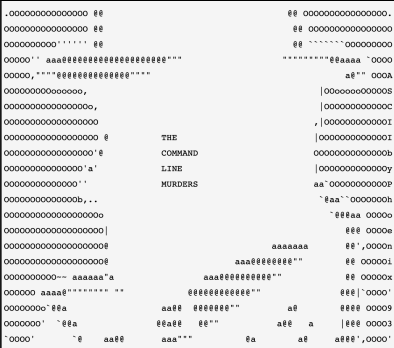
"The Command Line Murders"
is a fun,
detective-themed game
that teaches the basics of navigating and manipulating files in a
Linux
-style command line by
solving a fictional murder mystery.
The game is
designed for those new to the command line
, so it's a great way to learn commands like
grep
, cat, head, tail, find, and so on.
Let’s go, detective!
There's been a murder in Terminal City , and the City Police Department needs your help!
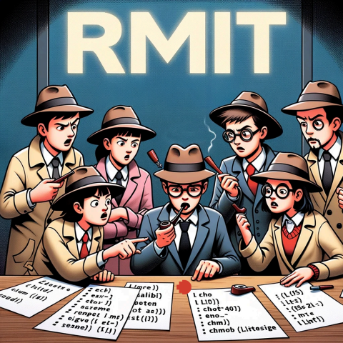
To figure out who did it, you need access to a
bash
command line.
-
Once you're ready, download it as a
zipfile usingcurl.
curl -L -O https://github.com/TomHuynhSG/clmystery/archive/master.zip-
It is a zip file so you need to
unzipit:
unzip master.zip-
Change your current directory inside it:
cd clmystery-master-
Let’s list all files inside this special folder:
ls-
You should see these files then you are set to ready for your detective investigation:
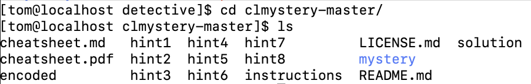
-
Begin by opening the 'instructions' file using a command using cat command so like:
cat instructions(cat is a command that will print the contents of the file called instructions for you to read.)
Note: Be the true bash terminal detective! Do the right thing by only using the bash commands to solve this great mystery! Great Power comes with great responsibilities!
Ok, Detective! Let's start!
Everything you need inside the mystery directory so make sure you change your current working directory there!
You'll want to start by collecting all the clues at the crime scene (the 'crimescene' file).
The officers on the scene are pretty meticulous, so they've written down EVERYTHING in their officer reports. You'll have a file that represents the crime scene, which might contain numbers corresponding to different people, places, and things at the crime scene. Use cat to read the contents of the file.
You'll find files that contain people's names. You may need to look inside these to check their alibis. Again, use cat or grep to find the necessary information.
Similar to verifying alibis, you might need to find out which weapon was used in the murder. This could involve looking for files with names of different weapons and using command-line tools to determine which one was used.
Eventually, you'll collect enough evidence to identify the killer. The solution will come from piecing together the right combination of clues.
Fortunately the sergeant went through and marked the real clues with the word "CLUE" in all caps.
So your first hint is to search for the word “CLUE" for all files in the crimescene file! Thus, you will see three clues, and continue to use these clues to search for stuff you want to investigate in other files.
I hope you find the name of the person who committed the crime !
Remember, the idea is to simulate a real investigation using the command line, so avoid using text editors or other tools to view the files except for the instructions and cheatsheets provided.
Good luck and have fun, DevOps Detective!
💡 Hints if you are stuck
-
Here are the
bashcommands you need to use to solve this crime! Remember you might use other commands as you see fit as your detective way can be different from my detective way!-
cd -
cat -
grep -
head -
tail
-
-
If you do get stuck while trying to figure out who the murderer is, you can use the hints that have been provided for you! They are denoted with a filename called hint. If you get stuck, there are hint files provided within the game that you can consult. These are named hint1, hint2, etc. There are 8 hints total - simply replace with a number 1 through 8. NOTE: try to do as much as you can without the hints! To access a hint from the command line, simply type:
cat hint1-
If you forget all commands somehow, then you can familiarise yourself with command-line tools as the game provides a
cheatsheet.mdor cheatsheet.pdf to help you understand various commands.
📚 Command reference
🧩 Command syntax
command parameter_1 parameter_2 ...command -options arguments-
A command is a text instruction given to the computer
-
Command behavior can be modified with options
Example:
-
date -
pwd(short for "print working directory") -
ls(listing) -
ls
-p(append a slash to the end of directories name) -
ls
-A(list all content) -
ls -h (human readable)
-
ls -l (listing in long format)
-
cd(change directory), cd .. move to "parent directory" -
history, history -c (clear the history)
🗂️ Filesystem concepts
Files are organized in a hierarchical directory structure. It is an organizational system for files and directories, in which files and directories are contained in other directories.
🧭 Paths and locations
-
An absolute path is like a latitude and longitude: it has the same value no matter where you are.
-
A relative path, on the other hand, specifies a location starting from where you are: it's like saying "20 kilometers north".
-
The root directory is defined by the path /.
-
The home directory is defined by ~.
🗂️ Working with files and directories
-
mkdirdir1 dir2 dir3 creates three directories -
rmdirdir1 dir2 dir3 removes the empty directories -
rm-R dir deletes non-empty directory -
cpfile1 file2 copies file,-i(interactive mode) to prompt user to answer if they want to overwrite file. -
mvfile1 file2 moves file -
touchfile_namecreates an empty file
🔍 Inspect files
-
catfile_nameviews a file's contents or concatenate several files -
lesslarge_filedisplays one page at a time; press Space to move down and q to quit. When viewing several files, use :n for the next file, :p to go back, :q to quit -
head-n3file_nameprints the first 3 lines of the file -
tail-n3file_nameprints the last 3 lines of the file -
shuf
-n3file_nameprints randomly 3 lines of the file -
wcfile_namecounts number of lines, words, and characters in the file -
column -s"," -t
example_data.csv(be careful to use column on very large files) -
sortfile_namesorts the content (-rto reverse,-ufor getting rid of duplicates)
grepgrep is great for searching files, especially long files, for the strings you care about. It's installedeverywhere and can search files for matches, list files that don't contain a string, and recursively search directories.
-
grepHellogreetings.txt: find line with the word “Hello” -
grep --ignore-case hello
greetings.txt= grep-ihellogreetings.txtargument with more than one letter start with two dash -
grep -E ‘[Hh]ello’
greetings.txt: apply regex -
grep --invert-match hello
greetings.txt= grep-vhellogreetings.txt: find every line that not contains “hello” -
grep
-i-vhellogreeting.txt: find every line that not contain the case-insensitive “hello” -
grep
-rHello folder/ : search every subfolder and file for the string “Hello”
🔗 Command pipelines
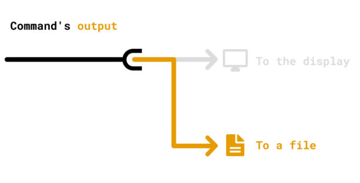
So far we see all of the output on the screen, now we'll redirect the output from the screen to file.
-
echo"Hello" >greetings.txtreplaces all of the content (be careful) -
echo "Hello" >>
greetings.txtappends to the end of the file
A pipeline passes the standard output of one command to the standard input of the next command.
-
sortgreetings.txt, sortgreetings.txt>sorted_greetings.txt: sort in alphabetical order -
grepHsorted_greetings.txt>grepped_sorted_greetings.txt: find and save the result in new file